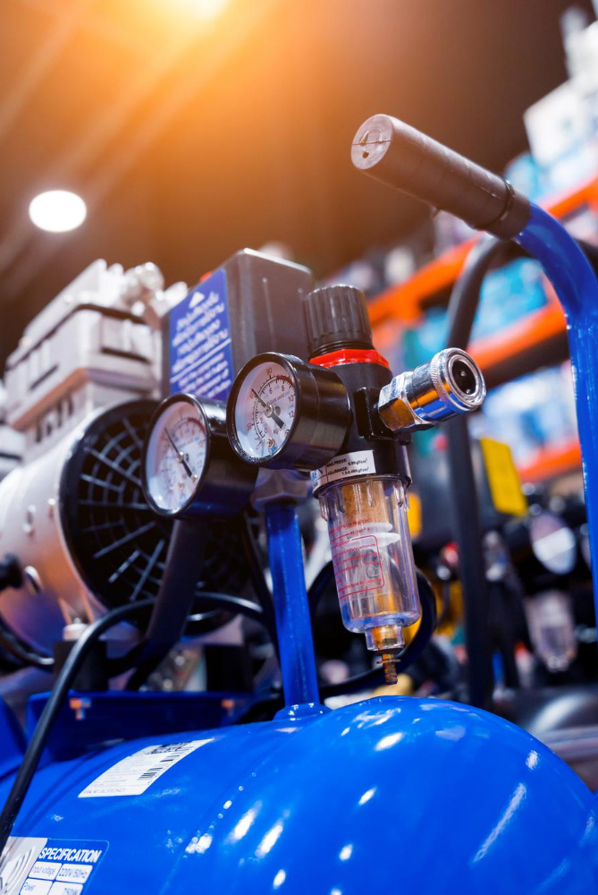
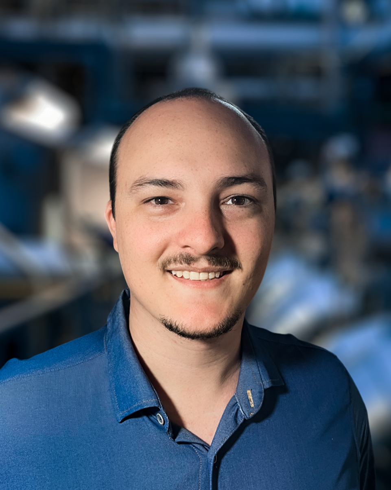

Sistemas Hidráulicos e Pneumáticos



Apresentação
Esta disciplina tem como propósito introduzir os princípios, dispositivos e técnicas de controle que envolvem a transmissão de potência por fluidos. O objetivo é que você compreenda como pressão, vazão, compressibilidade e outras variáveis influenciam o funcionamento de máquinas, atuadores e circuitos utilizados na automação industrial.
Iniciamos com os fundamentos dos fluidos utilizados em sistemas de potência, abordando a diferença entre hidráulica e pneumática, as propriedades do ar comprimido e as leis físicas que regem o comportamento dos fluidos. A partir dessa base, passaremos a compreender como a energia é gerada, condicionada e distribuída, analisando o funcionamento dos compressores, os métodos de secagem e filtragem e o projeto das redes de distribuição.
Em seguida, vamos aprofundar nos componentes de atuação e controle. São estudados atuadores lineares e rotativos, hidráulicos e pneumáticos, bem como válvulas direcionais, reguladoras e de bloqueio. A análise de suas características, simbologias e critérios de dimensionamento busca preparar você para identificar e selecionar corretamente os elementos de um sistema fluido-mecânico.
Por fim, abordaremos a elaboração de circuitos e técnicas de comando, incluindo diagramas trajeto-passo, método intuitivo, método cascata e lógicas cabeadas. Esses conhecimentos permitem interpretar, montar e analisar sequências de operação, integrando fundamentos teóricos e práticas essenciais à automação industrial e aos requisitos da Indústria 4.0.
Professor da disciplina Professor da disciplina Professor da disciplina Professor da disciplina

Thiago Henrique de Bona
Lado A: Mestre em Engenharia Mecânica na área de Ciências Térmicas pela Universidade Estadual de Maringá (UEM), com graduação em Engenharia Mecânica pela Universidade Paranaense (UNIPAR) e especializações em Gestão da Manutenção Industrial (UNINTER) e Engenharia de Segurança do Trabalho (Faculdade Descomplica). Tenho registro profissional ativo como Engenheiro de Segurança do Trabalho (CREA-PR 179215/D).
Atuo como docente na Universidade Paranaense nos cursos de Engenharias, Gestão e Administração, bem como nos cursos técnicos, nas modalidades presencial, semipresencial e a distância. Minha experiência abrange disciplinas como Teoria da Usinagem e CNC, Projeto Mecânico Aplicado, Sistemas Hidráulicos e Pneumáticos, Metrologia Dimensional, Manutenção Industrial e Segurança do Trabalho.
Além da docência, trabalho de forma autônoma com projetos, perícias e consultorias técnicas em engenharia mecânica e segurança do trabalho em minha empresa (TBMS Engenharia). Já atuei em empresas dos setores de manufatura, manutenção, automação e projetos, exercendo funções que vão desde a mecânica industrial até o gerenciamento de equipes, análise de desempenho produtivo e desenvolvimento de soluções técnicas. Também ministrei cursos pelo SENAI-PR como técnico de ensino, contribuindo para a formação prática de profissionais da indústria.
Minha trajetória une prática de chão de fábrica, atuação técnica e experiência acadêmica, com foco em aplicar a engenharia de forma crítica, eficiente e alinhada às necessidades reais do setor produtivo.
Lado B: Fora da sala de aula e dos ambientes industriais, tenho uma série de interesses que contribuem para minha criatividade, equilíbrio e visão de mundo. Sou apaixonado por videogames e jogos em geral, que considero não apenas uma forma de lazer, mas também uma excelente maneira de exercitar o raciocínio estratégico e o trabalho em equipe. Também sou grande fã de séries, animes e filmes, sendo Game of Thrones a minha favorita – tanto pela construção do enredo quanto pelas questões de poder, engenharia de guerra e estratégia presentes na narrativa.
Sou um esportista atípico, pois meu esporte é o Airsoft, sou jogador pertencente a um time chamado Ronins, e sou músico multi-instrumentista, sendo a guitarra como meu principal instrumento. A música é uma das minhas maiores paixões e representa uma válvula de escape criativa e emocional. Tenho também um hábito constante de estudar assuntos diversos: adoro aprender sobre o funcionamento das coisas, explorar curiosidades científicas e mergulhar em conteúdos aleatórios que ampliem minha visão de mundo.
Sou extremamente organizado e detalhista, o que se reflete tanto na vida pessoal quanto profissional. Amo a engenharia não apenas como profissão, mas como forma de pensar e ver o mundo – entender sistemas, resolver problemas e criar soluções práticas me motiva diariamente. Compartilho esses interesses com meus alunos sempre que possível, mostrando que a paixão pelo conhecimento vai além da sala de aula e está presente em todos os aspectos da vida.
Thiago Henrique de Bona
Mestre em Engenharia Mecânica na área de Ciências Térmicas pela Universidade Estadual de Maringá (UEM), com graduação em Engenharia Mecânica pela Universidade Paranaense (UNIPAR) e especializações em Gestão da Manutenção Industrial (UNINTER) e Engenharia de Segurança do Trabalho (Faculdade Descomplica). Tenho registro profissional ativo como Engenheiro de Segurança do Trabalho (CREA-PR 179215/D).
Atuo como docente na Universidade Paranaense nos cursos de Engenharias, Gestão e Administração, bem como nos cursos técnicos, nas modalidades presencial, semipresencial e a distância. Minha experiência abrange disciplinas como Teoria da Usinagem e CNC, Projeto Mecânico Aplicado, Sistemas Hidráulicos e Pneumáticos, Metrologia Dimensional, Manutenção Industrial e Segurança do Trabalho.
Além da docência, trabalho de forma autônoma com projetos, perícias e consultorias técnicas em engenharia mecânica e segurança do trabalho em minha empresa (TBMS Engenharia). Já atuei em empresas dos setores de manufatura, manutenção, automação e projetos, exercendo funções que vão desde a mecânica industrial até o gerenciamento de equipes, análise de desempenho produtivo e desenvolvimento de soluções técnicas. Também ministrei cursos pelo SENAI-PR como técnico de ensino, contribuindo para a formação prática de profissionais da indústria.
Minha trajetória une prática de chão de fábrica, atuação técnica e experiência acadêmica, com foco em aplicar a engenharia de forma crítica, eficiente e alinhada às necessidades reais do setor produtivo.
Fora da sala de aula e dos ambientes industriais, tenho uma série de interesses que contribuem para minha criatividade, equilíbrio e visão de mundo. Sou apaixonado por videogames e jogos em geral, que considero não apenas uma forma de lazer, mas também uma excelente maneira de exercitar o raciocínio estratégico e o trabalho em equipe. Também sou grande fã de séries, animes e filmes, sendo Game of Thrones a minha favorita – tanto pela construção do enredo quanto pelas questões de poder, engenharia de guerra e estratégia presentes na narrativa.
Sou um esportista atípico, pois meu esporte é o Airsoft, sou jogador pertencente a um time chamado Ronins, e sou músico multi-instrumentista, sendo a guitarra como meu principal instrumento. A música é uma das minhas maiores paixões e representa uma válvula de escape criativa e emocional. Tenho também um hábito constante de estudar assuntos diversos: adoro aprender sobre o funcionamento das coisas, explorar curiosidades científicas e mergulhar em conteúdos aleatórios que ampliem minha visão de mundo.
Sou extremamente organizado e detalhista, o que se reflete tanto na vida pessoal quanto profissional. Amo a engenharia não apenas como profissão, mas como forma de pensar e ver o mundo – entender sistemas, resolver problemas e criar soluções práticas me motiva diariamente. Compartilho esses interesses com meus alunos sempre que possível, mostrando que a paixão pelo conhecimento vai além da sala de aula e está presente em todos os aspectos da vida.
Ficha catalográfica
BONA, Thiago Henrique de.
Sistemas Hidráulicos e Pneumáticos/ Thiago Henrique de Bona. – Umuarama: Unipar, 2026.
171 p.
ISBN: 978-65-6150-026-5
1. Sistemas Hidráulicos e Pneumáticos. 2. Automação Industrial. 3. Controle de Potência Fluida.
CDD: 621.2